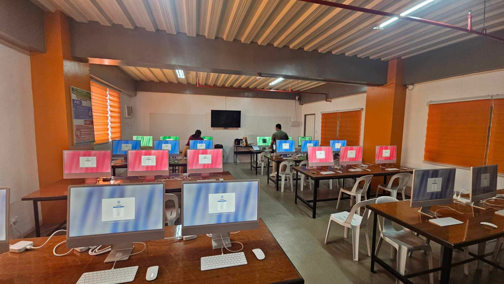
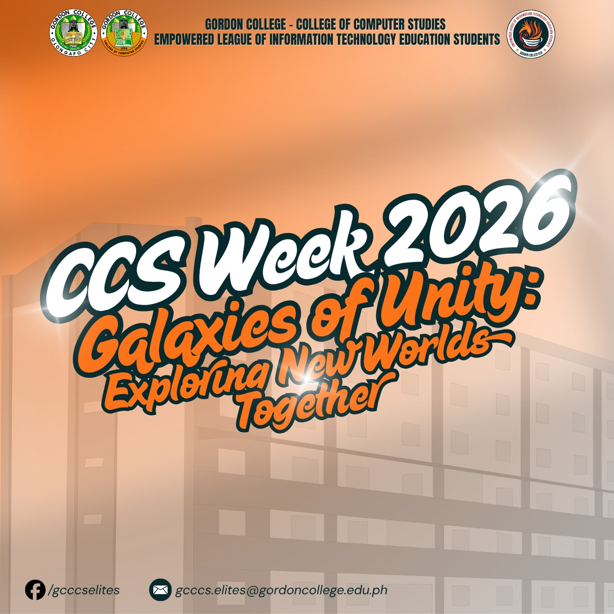
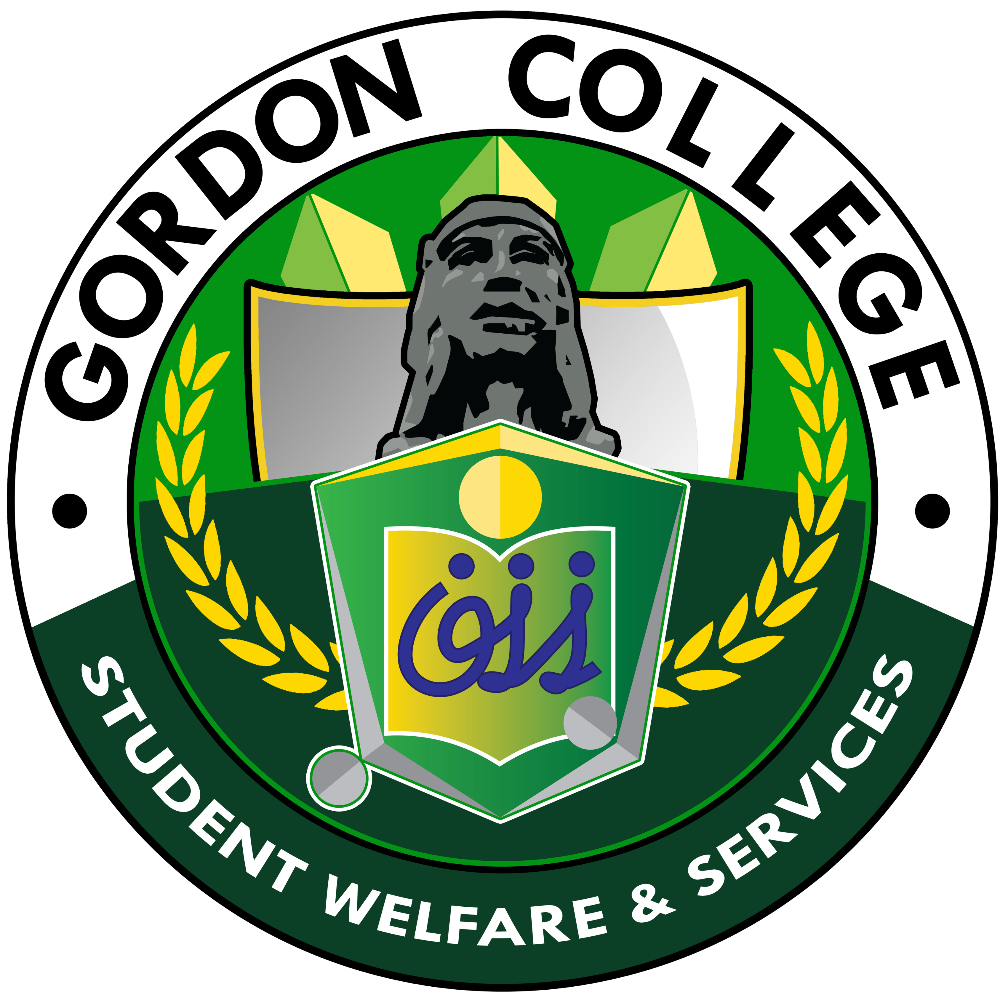
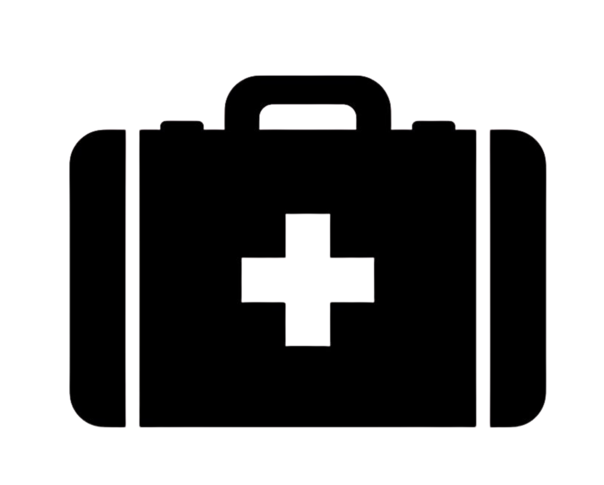
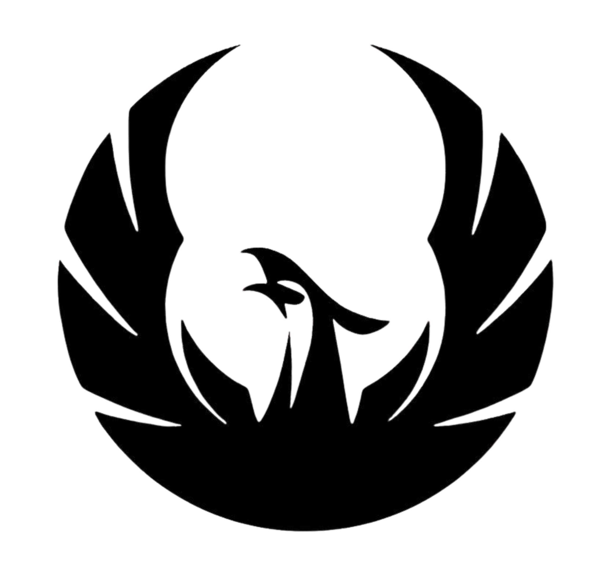
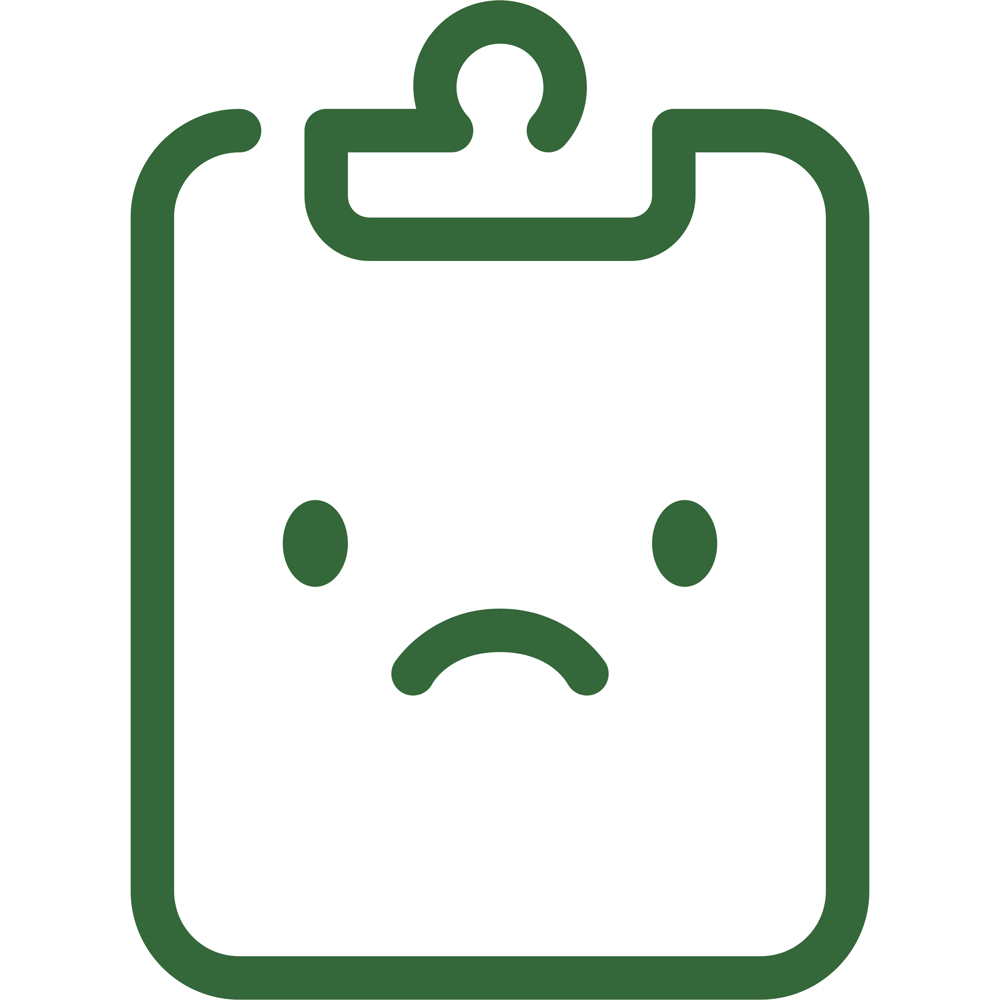

THE PHOENIX GUIDE
GORDON COLLEGE | COLLEGE OF COMPUTER STUDIES | OLONGAPO CITY
The College of Computer Studies (CCS) at Gordon College is a premier hub for innovation, technology, and excellence. We empower the next generation of tech leaders through rigorous academic programs, industry-aligned training, and a vibrant community of digital creators.
Gordon College
Excellence, Character, Service
Gordon College stands committed to providing quality and accessible education — shaping the next generation of leaders in Olongapo City.
Gordon College
EXCELLENCE | CHARACTER | SERVICE
Founded on the principles of accessibility and academic rigor, Gordon College serves as Olongapo City's beacon of higher education. Our campus provides a modern environment where students from all walks of life can pursue their dreams in technology, business, and the arts.

CCS Computer Lab
CCS Week 2026Programs Offered
GC-CCS Program Courses
Hover over each card to learn more about the program, including descriptions and organizations open to you. Click the card to visit the official program page.
BACHELOR OF SCIENCE IN COMPUTER SCIENCE
Hover to learn more..
BSCS CAREER PATH
Computer Science is a comprehensive program for those students wanting to learn the deeper side of technology and its application into concepts such as Algorithm, Data Structure and Software Engineering. It is to thpse who wants to explore deeper concepts of technology.
- Software Engineer
- Full-Stack Developer
- Mobile App Developer
- Data Scientist
- Security Analyst
- Cloud Architect
- Software Developer
BACHELOR OF SCIENCE IN ENTERTAINMENT & MULTIMEDIA COMPUTING
Hover to learn more..
BSEMC-DAT CAREER PATH
Digital Animation Technology is to those students who are passionate about technology and in combination of creativity. It is a mixed of computer fundamentals & multimedia techniques. It equips students with skills regarding graphics and animation.
- Animator
- Technical Director
- Art Director
- AI Pipeline Architect
- VFX Supervisor
- Aerospace Simulation Artist
BACHELOR OF SCIENCE IN ENTERTAINMENT & MULTIMEDIA COMPUTING
Hover to learn more..
BSEMC-GD CAREER PATH
Game Development is to those whore are passionate about technology and creating games. It is a combination of computer fundamentals & multimedia techniques. This program equips students in innovating games or virtual reality. It is for students who wanted to create games and visuals through computer software.
- Game Developer
- Simulated Environment Engineer
- WEB3 Game Developer
- E-Sports Technical Director
- Graphic Software Engineer
BACHELOR OF SCIENCE IN INFORMATION TECHNOLOGY
Hover to learn more..
BSIT CAREER PATH
Information Technology is to those students who are passionate abput technology and business. The program offers understanding on IT systems such as Database Management, Network Administration, cybersecurity and Project Management
- Cloud Architect
- IT Security Analyst
- Database Administrator
- IT Project Manager
- Quality Assurance Tester
- IoT Architect
- Digital Forensics Analyst
Your Journey Starts Here
THE PHOENIX GUIDE
Welcome, Future Tech Leader! Your journey starts with a single choice. Each program under the College of Computer Studies is designed to sharpen specific skills. Select the path that aligns with your passion, and we'll guide you through the 12 steps to success.
ADMISSION PROCESS
Create your online admission account through the Gordon College portal. Fill out all required personal information and upload the necessary documents.
ADMISSION EXAM
Take the entrance examination at the scheduled date. The exam assesses your aptitude in logical reasoning, mathematics, and basic computer concepts.
ADMISSION PROCESS
Create your online admission account through the Gordon College portal. Fill out all required personal information and upload the necessary documents.

GORDON COLLEGE ADMISSION AND TESTING
The Gordon College Admission and Testing Unit will be the one who will guide you for your admission journey being a GCians. They are in charge of the admission process and Admission Exams.
WHAT DO YOU NEED TO DO IN ADMISSION PROCESS
- Kindly create an Admission Account on GCAT.
- Kindly fill out the information needed.
- During filling the information, they will ask for your course choice.
- After some time, they will give you a document to download and a schedule to have GCAT at Gordon College.
DOCUMENTS NEEDED TO PREPARE
- 2X2 Picture with White Background
- Valid ID / Senior High School ID
- NSO/PSA Birth Certificate
- Certificate of Good Moral Character
- Academic Records: G11 Report Card or SF9 or Form 138 or ALS Certificate or Transcript of Record.
CONTACT FOR GCAT: info.gcat@gordoncollege.edu.ph
ADMISSION EXAM
Take the entrance examination at the scheduled date. The exam assesses your aptitude in logical reasoning, mathematics, and basic computer concepts.
GORDON COLLEGE ADMISSION AND TESTING
The Gordon College Admission and Testing Unit will be the one who will guide you for your admission journey being a GCians. They are in charge of the admission process and Admission Exams.
THINGS TO REVIEW AND GUIDE FOR EXAM
- They will give you a Schedule and Documents that need to be brought on Exam Day.
- Review: Literature, Science, Mathematics, English (Junior High to Senior High School lessons).
- OLSAT Time: 1 hour with 72 questions. SPM has 60 questions.
- Search for OLSAT reviewers online.
DOCUMENTS NEEDED TO PREPARE
- GCAT Schedule Slip
- Student Information Sheet
- 2x2 Picture with White Background
- SHS or any Valid ID Card
- Ballpen or Pencil
- Paper just in case
- Glue (For 2x2)
CONTACT FOR GCAT: info.gcat@gordoncollege.edu.ph
GCAT SCORE
GCAT will announce the student their scores for GCAT OLSAT AND SPM Examination. After that, they will give a formal announcement if the student passed in their preferred course or not.
CCSAT (CCS SPECIAL EXAMINATION)
CCS Faculty will conduct a special examination to those who are enrolling as a CCS students. The purpose of it is to gain insights to the students prior knowledge.
INTERVIEW WITH THE COORDINATOR
A personal interview with your preferred coursed to evaluate your communication skills, academic goals and commitment to the program.
GCAT SCORE REVEAL
GCAT will announce to the student their scores for the GCAT, OLSAT, AND SPM examinations. After that, they will give a formal announcement if the student passed in their preferred course or not.
GORDON COLLEGE ADMISSION AND TESTING
The Gordon College Admission and Testing Unit office is open for student question regarding GCAT examination results. The GCAT Portal will announce if you have passed or not. .
WHAT DO YOU NEED TO DO IN THIS PHASE
- The result will show for at least 3-5 business days.
- The result will show how you answer, and it will reflect if you are going to proceed to the next process or will be rejected to you preferred courses.
- After the result is revealed, you will wait at least more than 3 weeks to proceed on the next process.
- It will not be fast proceeding to the next step, it takes time.
TIPS
- Your score would be at least average or above average to secure your slot to you preferred program.
- It is important to review more of your OLSAT and SPM examination.
CONTACT FOR REGISTRAR: registar@gordoncollege.edu.ph
CCSAT (CCS SPECIAL EXAM)
CCS Faculty will conduct a special examination to those who are enrolling as a CCS students. The purpose of it is to gain insights to the students prior knowledge.
GORDON COLLEGE CCS FACULTY
The Gordon College CCS Faculty or Coordinator will be incharge in this CCSAT examination. The text covers the introductory part of any CCS courses.
WHAT TO DO IN THIS PHASE
- The exam will be composed of general knowledge about the CCS program and some advanced topics to understand the student's current knowledge about their preferred course.
- This exam covers a specific exam regarding BSCS, BSIT, and BSEMC, respectively.
- REVIEW : What is Computer, Basic Troubleshooting, Coding Basics, Flowchart & Pseduocode.
DOCUMENTS & OTHER INFORMATION
- Student Information Sheet
- Paper and Ballpen
- Examinations may be conducted either in the designated classroom or in the computer laboratory at Gordon College.
- Proctor will vary depending on your preferred course.
- It is done batch by batch depending on the number of students.
CONTACT FOR CCS: info.ccs@gordoncollege.edu.ph
INTERVIEW W/COORDINATOR
Applicants will participate in an interview with the coordinator of their preferred program. The interview is intended to assess communication skills, academic interests, career goals, and commitment to the chosen field of study.
GORDON COLLEGE CCS FACULTY
Applicants will meet with faculty members from the College of Computer Studies corresponding to their selected program. Faculty members will evaluate applicants based on their interview performance, academic qualifications, and examination results.
WHAT TO DO IN THIS STEP
- Arrive early at the designated venue.
- Observe proper dress code and maintain a presentable appearance.
- Be ready to discuss your interest in studying at Gordon College.
- Applicants are encouraged to present certificates, trainings, or proof of experience related to the field of computer studies or information technology, if available.
DESCRIPTION
- Prepare all program-specific requirements for verification and evaluation.
- Ensure that all submitted documents are complete and valid.
CONTACT FOR CCS: info.ccs@gordoncollege.edu.ph
MEDICAL PROCESS
A series of health screenings conducted to establish a baseline for the student's physical well-being.
PASSING OF DOCUMENTS
Completion of document submission procedures to ensure compliance with college admission and registrar requirements.
ENLISTMENT & ENROLMENT
Completion of subject enlistment, payment of fees, release of class schedules, and issuance of student credentials as part of the official enrollment process. Students are then formally recognized as GC-CCS enrollees.

MEDICAL PROCESS
The School Clinic is the primary on-campus facility responsible for conducting health screenings and assessments, establishing a baseline of each student's physical well-being, and ensuring all medical findings are validated and recorded within their official medical records.
GORDON COLLEGE HEALTH AND SERVICES UNIT
The primary facility on campus where health assessments are validated and student medical records are managed.
WHAT DO YOU NEED TO DO IN THIS PHASE
- Secure your medical laboratory results
- BLOOD TEST
- URINALYSIS
- X-RAY
DESCRIPTION
- Refers to any existing health clearances or records from previous check-ups that the college clinic may require for your student health file.
GORDON COLLEGE CLINIC: GC Health Services (Facebook)
PASSING OF DOCUMENTS
Submit all finalized requirements to the CCS Office or Registrar. This is an in-person step — make sure all documents are complete before going.

GORDON COLLEGE REGISTAR
The Gordon College Registrar Office will be the one who will keep your records academic and will be in charge during the submission of requirements in Gordon College.
WHAT TO DO IN THIS PHASE
- Set an appointment for the date that you will submit the documents.
- Kindly prepare the needed requirements during this time.
- You should have copies of everything for future use.
- Prepare everything needed in this submission; you will fulfill everything needed.
DOCUMENTS NEEDED TO PREPARE
- Academic Records, SF9 or F138 or Cert of Completion or Transcript of Record.
- Good moral Certificate and Student information Sheet
- Cert of Residency and Birth Certificate (NSO or PSA)
- SHS School ID and Medical Certificate from GC
- Long Brown Envelop (LastName, FirstName, MI)
CONTACT FOR REGISTRAR: registar@gordoncollege.edu.ph
ENLISTMENT & ENROLLMENT
The final administrative step to officially register as a student. This involves the submission of verified credentials and the generation of your official student load or schedule.
FACULTY INCHARGE
CCS will be incharged in the student enlistment and enrollment process, you will go to CCS to confirm your enrollment and to your preferred course you will show your unit to be enlisted and enrolled.
WHAT TO DO
- Kindly submit all of the documents needed to the registrar to proceed to the next process of enrollment.
- If you have passed all requirements, you will be tasked to create an account on GCES now under GCLAMP.
- In GCES, it is the portal for enrollment and enlistment of students.
DESCRIPTION
- Notice of Admission
- Original Form 138 (Report Card)
- PSA Birth Certificate
- Medical Clearance issued by the School Clinic
CONTACT FOR CCS: info.ccs@gordoncollege.edu.ph
ONLINE ORIENTATION
This orientation will serve as an introduction to Gordon College CCS, its program coordinator, Faculties Available and program dean. It also establishes a connection between students.
1ST ORIENTATION
This orientation will serve as a welcome to Gordon College. This orientation will talk about the rules and regulations here in Gordon College and introduces the Faculty and Orgs available
APERTURA
Apertura is an event where we welcome freshmen from various departments. It a way to formally begin the academic year.
ONLINE ORIENTATION
This orientation will serve as an introduction to Gordon College CCS, its program coordinator, Faculties Available and program dean. It also establishes a connection between students.
GORDON COLLLEGE CCS FACULTY
Gordon College CCS will be in charge of this orientation; they are introducing the program and faculty to introduce them to students here in Gordon College.
PURPOSE OF THIS ORIENTATION
- The purpose of this orientation is to introduce students to the CCS Program and also introduce the faculty that the students meet in school. Also this orientation gives a student a contract or document to fill out and will be given to faculty soon.
PROCESS OF ORIENTATION
- The orienation usually begins with the assembly of students. It may be a batch depending on the number of students available to that specific course. Then the faculty will be introduced alongside the program dean. They will navigate the rules and regulations here in the CCS Department, and the student will be given a document to fill out and will be passed to the faculty soon.
GORDON COLLEGE CCS FACULTY: info.ccs@gordoncollege.edu.ph
FACE TO FACE ORIENTATION
This orientation will serve as a welcome to Gordon College. This orientation will talk about the rules and regulations here in Gordon College and introduces the Faculty and Orgs available
GORDON COLLEGE CCS FACULTY
CCS faculty will lead in this activity with the guidance of Gordon College disciplinary office staff to fully discuss rules and regulations in this institution.
PURPOSE OF THIS ORIENTATION
- The orientation provides incoming students with a comprehensive overview of the institution's rules, regulations, and corresponding disciplinary policies. It also introduces the official student organizations affiliated with each program — SPECS for BSCS, IMAGES for BSEMC, and ELITES for BSIT — and familiarizes students with the faculty and staff to help them navigate campus life effectively.
PROCESS OF ORIENTATION
- Usually begins with a general assembly for all colleges, followed by a departmental breakout session specifically for CCS (College of Computer Studies) to discuss course-specific lab rules and hardware requirements.
GORDON COLLEGE CCS: info.ccs@gordoncollege.edu.ph

APERTURA
Apertura is an event where we welcome freshmen from various departments. It a way to formally begin the academic year.
GORDON COLLEGE FACULTIES & STAFFS
The entire Gordon College Staff are incharge in this event. They are the Facilitator of this event with the Organization available to introduce them to new students here in Gordon College.
APERTURA EVENT
- Apertura is an event where we welcome freshmen and introduce them to the Gordon College culture. This event was made for them to navigate and socialize with other students from other departments also. Lastly it is organized by organization to invite them to join any orgs or activities available.
WHAT TO DO IN THIS EVENT?
- Wear the prescribed attire (This will vary depending on your program department color). For the CCS students, they are required to wear something orange on their tops.
- Participate in any events available to your program.
- Connect with other CCS students to gain insights about the experience.
ENJOY YOUR JOURNEY, GCIANS!!!
What You'll Need
CCS MUST HAVE
Hover each card to see the full list of what you'll need before and during your first year as a CCS Phoenix.
SCHOOL SUPPLIES
The items you will need in your 1st year journey as a CCS Student here in Gordon College.
— HOVER TO REVEALSCHOOL SUPPLIES
- Yellow Pad Paper
- Ballpen
- Calculator
- Smartphone
- Bond Paper (for coding outputs)
SPECS REQUIREMENTS
Here are the preferred specs of your laptop or computer in studying Gordon College CCS Program.
— HOVER TO REVEALSPECS REQUIREMENTS
- Ryzen 5 or Intel i5 processor
- Integrated or Dedicated Graphics Card (Dedicated highly recommended)
- 8 or 16GB DDR4 or DDR5 RAM (minimum)
- 1080P Screen Resolution
- 14 to 15.6 inch Laptop Screen

PROGRAMS TO DOWNLOAD
Here are the programs you will need to download for Gordon College CCS. These are necessary.
— HOVER TO REVEALPROGRAMS TO DOWNLOAD
- VSCode
- Chrome / Browser
- Figma
- Eclipse
- GitHub
- Canva
- Photo Editing
- Blender
- OBS Studio
- Unreal Engine (EMC)
- Java Program
- C / C++ / C#
- Editing Software
- PHP Software
- GCLAMP & GCES